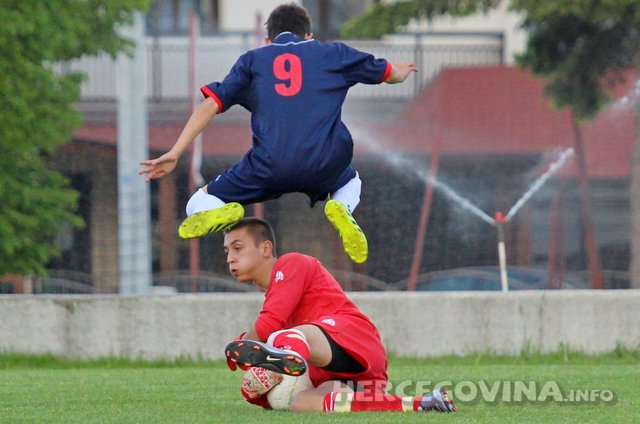
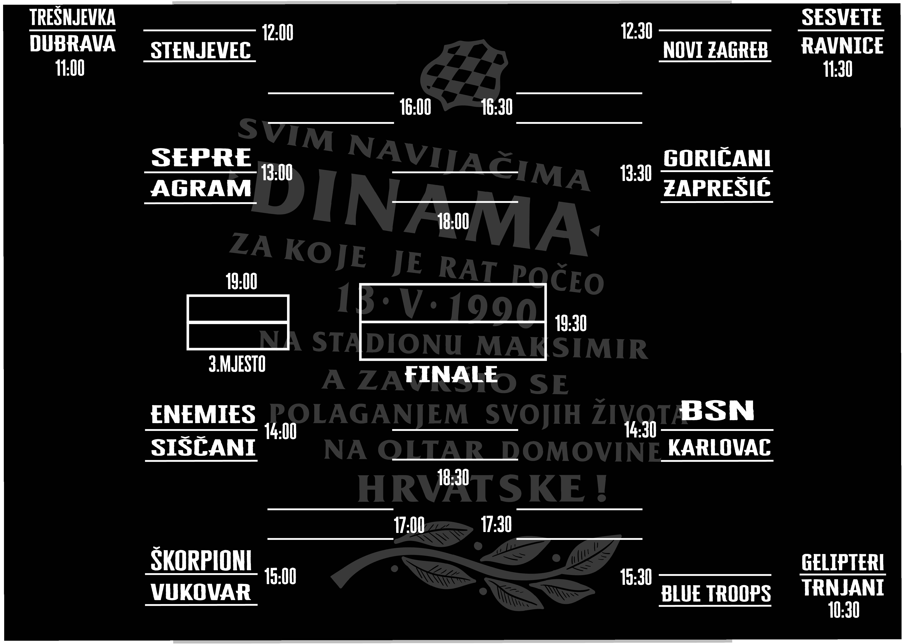

Na ovoj stranici će te saznati neke stvari o meni, te vidjeti neke moje slike.
Moje fotografije:
Trenirao sam nogomet trinaest godina, te sa 18 godina sam imao nastupe u Prvoj Ligi FBiH 
Ovo je jedan od mojih radova, plakat za HNK Tomislav. Ovo je takodjer jedan od mojih radova,plakat za turnir "Za sve one kojih nema!" za poginule Hrvatske branitelje u Domovinskom ratu. 